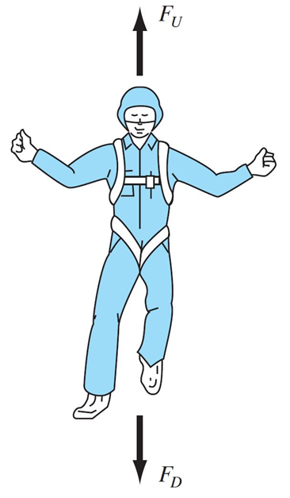

What’s the terminal velocity of someone falling with a parachute? (this is our system)

Assumptions
Let’s say we have a model for this problem:
\[\frac{dv}{dt} = g -\frac{c}{m}v\]
where \(g\) is gravitational acceleration, \(c\) is a drag coefficient, \(m\) is the parachutist’s mass, and \(v\) is their velocity. The solution to this differential equation is:
\[ v(t) = \frac{gm}{c}(1 - e^{ct/m})\]
Use the following parameters for the parachutist:
Parameter
Value
Mass
70 kg
Drag coefficient
12 kg/s
Summarize the goal(s) of the problem in your own words.
Use one of the provided equations to find the terminal velocity of a parachutist weighing 70 kg with a drag coefficient of 12 kg/s.
Describe your plan to solve the problem.
It looks like the second equation gives the velocity directly, so I’ll just use that one. If I plug a big value for \(t\) into the equation, it will probably show the terminal velocity. But I want to be able to check that, so I’ll calculate velocity for several values of \(t\) and confirm that the velocity stops changing (i.e., reaches it’s terminal value).
Steps: * assign values to known parameters * use a for loop to calculate and print the velocity for several (maybe 10?) time values from 0 to 100.
# Assign values to known parametersg =9.81# gravitational acceleration (m/s/s)e =2.71828# Euler's numberm =70# parachutist's mass (kg)c =12# drag coefiecient (kg/s)# use a for loop to calculate and print the velocity for several (maybe 10?) # time values from 0 to 100.for i inrange(10): t =10*i # time in seconds v = (g*m/c) * (1- e**(-c*t/m))print(f"At time {t} sec, the velocity is {v:0.2f} m/s")
At time 0 sec, the velocity is 0.00 m/s
At time 10 sec, the velocity is 46.92 m/s
At time 20 sec, the velocity is 55.37 m/s
At time 30 sec, the velocity is 56.89 m/s
At time 40 sec, the velocity is 57.16 m/s
At time 50 sec, the velocity is 57.21 m/s
At time 60 sec, the velocity is 57.22 m/s
At time 70 sec, the velocity is 57.22 m/s
At time 80 sec, the velocity is 57.22 m/s
At time 90 sec, the velocity is 57.22 m/s
print(f"The terminal velocity is {v:0.2f} m/s")
The terminal velocity is 57.22 m/s
Looking back at your code and the resulting output, reflect on whether your code achieved the problem goal(s). To the extent the problem models a physical system, how realistic does the behavior seem? Are there any changes you would make to your approach if you were to solve this problem again (e.g., to make your code more re-usable or to avoid dead ends)?
Yes, the code achieves the problem goal. The behavior seems realistic because: * The sign of the velocity is the same as acceleration (falling downward). * After about 50 seconds, the velocity stays the same. * When the drag coefficient is small, the velocity increases linearly.
I don’t know enough about parachuting to know if 57 m/s is a reasonable terminal velocity, but it sounds way too fast to be safe. A quick google search indicates a good landing speed for a parachute is around 7 m/s.
It would be nice if my code saved the velocity and time values so I could plot them. It would be hard to use this code to check the terminal velocity of several different combinations of mass and drag coefficient.